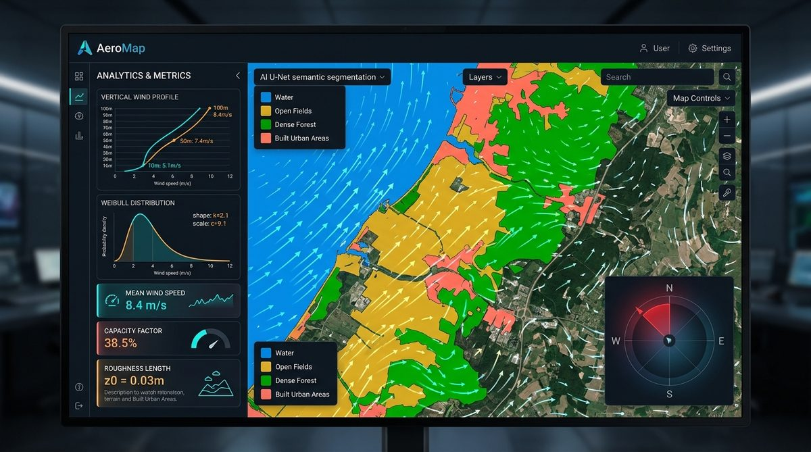
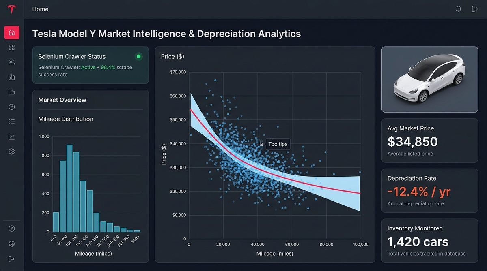
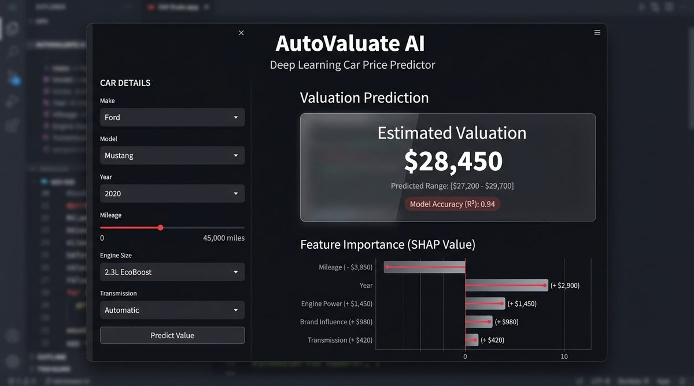

Estudiante de 5º año del Doble Grado en Ingeniería Matemática e Informática | ML Systems & LLMs
Proyectos
Desarrollo Web
EcoMap: Plataforma Web de Energías Renovables
Recomendación de tecnología óptima (solar/eólica) y estimación de rendimiento energético
Proyecto académico universitario de diseño y desarrollo de una plataforma web que evalúa parcelas de terreno y recomienda la tecnología energética óptima (solar o eólica). Incorpora predicción de rentabilidad y estimación de costes mediante modelos fundamentados en datos geoespaciales y energéticos. Aprendí a resolver problemas complejos integrando diversas fuentes de datos heterogéneas y optimizando algoritmos sobre una interfaz web intuitiva.
Tecnologías y herramientas utilizadas:
Frontend y Maquetación: HTML5 semántico y CSS3 estructurado para interfaces analíticas y visualización de parcelas.
Procesamiento Geoespacial: Python (GeoPandas, Shapely) para cálculo de irradiación solar, rosa de vientos y delimitación de parcelas catastrales.
Modelado y Optimización: NumPy y SciPy para estimación de curvas de rentabilidad económica y amortización energética.
AeroMap: Estimación de Potencial Eólico (En curso)

Estimación de potencial eólico con segmentación semántica U-Net y perfiles verticales de velocidad
Proyecto en desarrollo enfocado en automatizar la estimación del potencial eólico real a alturas de buje comercial (80 m - 120 m) a partir de mediciones meteorológicas a ras de suelo (10 m), solventando las pérdidas provocadas por la rugosidad aerodinámica del terreno en regiones insulares como Aruba. El sistema implementa web scraping cartográfico autónomo para descargar mosaicos satelitales en cuadrículas 3x3, segmentación semántica multiclase con Deep Learning (arquitectura U-Net) sobre la escala Davenport-Wieringa, filtrado geométrico del sector de barlovento, corrección termodinámica de la densidad del aire y extrapolación mediante la ley de Prandtl sobre un dashboard geoespacial interactivo. He aprendido a conectar visión por computador, modelos físicos y teledetección satelital en una solución orientada a la transición energética.
Tecnologías y herramientas utilizadas:
Deep Learning y Visión por Computador: PyTorch y Torchvision implementando segmentación semántica multiclase con arquitectura U-Net.
Ingeniería de Datos y Extracción: Web scraping cartográfico asíncrono sobre teselas satelitales (Slippy Map Tiles XYZ, proyección WGS84) y procesamiento de imagen con PIL.
Modelado Matemático y Físico: NumPy y SciPy para corrección termodinámica de densidad del aire y extrapolación logarítmica de viento (Ley de Prandtl).
Visualización Geoespacial: Folium / Leaflet y Matplotlib para rosas de viento e interfaces interactivas de toma de decisiones.
Programación y Análisis de Datos
Open Data: Análisis de la Accidentalidad en Madrid
Minería de datos, mapa de calor de incidentes y visualización interactiva de siniestros viales
Proyecto académico universitario de extracción, limpieza y análisis integral de datos abiertos sobre siniestros viales en la ciudad de Madrid realizado en equipo. Apliqué técnicas de minería de datos y visualización interactiva para detectar patrones de riesgo y concentración temporal de accidentes. Aprendí a colaborar estrechamente con compañeros y a comunicar conclusiones técnicas mediante dashboards claros y accesibles.
Tecnologías y herramientas utilizadas:
Procesamiento y Depuración: Python (Pandas) para ingestión de datos abiertos, limpieza de nulos y estandarización del histórico municipal.
Minería de Datos y Clustering: Scikit-Learn (K-Means, DBSCAN) para agrupamiento geoespacial de puntos de siniestralidad recurrente.
Visualización y Cuadros de Mando: Power BI y Folium para diseño de mapas de calor GIS y dashboards interactivos para la toma de decisiones.
Análisis de Precios de Tesla Model Y

Web scraping con Selenium, curva de regresión de depreciación y monitorización de precios
Proyecto personal centrado en el análisis del mercado de vehículos de segunda mano del Tesla Model Y para estudiar su curva de depreciación. Mediante un script automatizado con Selenium, realicé web scraping para recopilar los precios de segunda mano de todas las ofertas disponibles, junto con su kilometraje y antigüedad, evaluando cuantitativamente cómo pierde valor este modelo a lo largo del tiempo. Aprendí a automatizar la extracción de datos en sitios web dinámicos, resolver esperas explícitas en el navegador y limpiar y estructurar grandes volúmenes de datos para su posterior análisis.
Tecnologías y herramientas utilizadas:
Web Scraping Dinámico: Python con Selenium WebDriver y esperas explícitas (WebDriverWait) para extraer ofertas en portales SPA.
Limpieza y Transformación: Pandas y Expresiones Regulares (Regex) para parsear precios, kilometrajes, versiones y años de matriculación.
Modelado Estadístico de Depreciación: Statsmodels y Scikit-Learn ajustando modelos de regresión polinomial y exponencial para estimar el valor residual.
Visualización de Mercado: Matplotlib y Seaborn para representar la curva de depreciación y detectar oportunidades por debajo del valor de mercado.
Inteligencia Artificial y Big Data
TFG: Detección de Intrusiones con Machine Learning Distribuido y Big Data
Procesamiento de flujos de red en tiempo real, pipeline Medallion y curvas ROC (RF vs. GBT)
Trabajo de Fin de Grado en Ingeniería Matemática enfocado en el diseño, implementación y validación experimental de un Sistema de Detección de Intrusiones (IDS) distribuido sobre Apache Spark. El sistema procesa más de 16 millones de flujos del dataset industrial CSE-CIC-IDS 2018 mediante un pipeline MLOps por capas (Bronce, Plata y Oro), aplicando auditoría forense de calidad de datos, reducción de dimensionalidad a 45 variables y modelado multiclase con Random Forest y Gradient Boosted Trees (GBT One-Vs-Rest). Aprendí a optimizar la gestión de memoria y serialización en clústeres HPC locales (mitigando errores OOM), resolver el desbalanceo extremo de clases y analizar los límites físicos de escalabilidad y contención de memoria RAM bajo la Ley de Amdahl.
Tecnologías y herramientas utilizadas:
Computación Distribuida y Big Data: Apache Spark 3.5 y PySpark (Spark SQL y DataFrames) para procesamiento en memoria distribuida de 16M+ registros bajo arquitectura Medallion.
Machine Learning Distribuido: Spark MLlib implementando Random Forest y Gradient Boosted Trees (GBT One-Vs-Rest) con optimización de hiperparámetros.
Almacenamiento y Serialización: Apache Parquet con compresión Snappy y particionamiento eficiente para reducir el I/O en disco.
Infraestructura HPC: Clúster local gestionado con SLURM, optimización de memoria en JVM y mitigación de errores OOM mediante particionado adaptativo.
Recomendador de Precios de Coches de Segunda Mano con Deep Learning

Predicción de valoración con Deep Learning, intervalos de confianza y análisis SHAP de variables
Proyecto universitario desarrollado en colaboración para la estimación precisa del precio de mercado de vehículos de segunda mano en EE. UU. a partir de múltiples variables técnicas y de estado. El flujo abarca la depuración y estructuración del conjunto de datos, ingeniería de variables con codificación One-Hot y escalado numérico preservado en pipelines Joblib, el diseño y entrenamiento de una red neuronal profunda con Keras y TensorFlow regularizada con L2 y Dropout para prevenir sobreajuste, y la creación de una interfaz web interactiva en Streamlit para inferencia en tiempo real. Aprendí a estructurar pipelines de preprocesamiento reproducibles entre la fase de experimentación y producción, afinar arquitecturas de Deep Learning para regresión continua y desplegar aplicaciones web interactivas orientadas al usuario final.
Tecnologías y herramientas utilizadas:
Deep Learning y Redes Neuronales: TensorFlow y Keras implementando un perceptrón multicapa (MLP) con regularización L2, Dropout y optimizador Adam para regresión.
Pipeline de Ingeniería de Características: Scikit-Learn (OneHotEncoder, StandardScaler, ColumnTransformer) serializado con Joblib para inferencia reproducible.
Interpretabilidad del Modelo: SHAP (SHapley Additive exPlanations) para descomponer la contribución de cada variable técnica al precio final predicho.
Despliegue e Interfaz Web: Streamlit para crear una aplicación interactiva que ejecuta inferencia del modelo en tiempo real para el usuario final.
Cómo trabajo
Análisis de requisitos y planificación: Comprender las necesidades del proyecto, definir el alcance y estructurar los objetivos clave.
Diseño estructural y arquitectura de información:
Bocetos iniciales en papel o wireframes esquemáticos.
Selección de elementos HTML5 semánticos idóneos para cada bloque.
Desarrollo incremental: Escritura de código limpio, modular y bien estructurado siguiendo estándares internacionales.
Validación y control de calidad: Verificación con el validador oficial del W3C, comprobación del mapa de encabezados (HeadingsMap) y revisión de accesibilidad.
Control de versiones y despliegue: Registro de cambios mediante Git y publicación en plataformas como GitHub Pages.